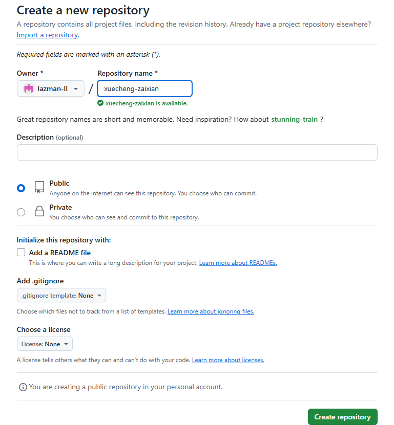
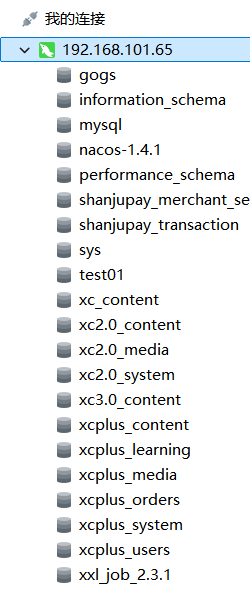

本文描述了黑马springcloud项目学成在线的环境搭建过程
1 开发工具版本
本项目主要使用的开发工具列表如下所示：
| 开发工具 | 版本号 | 安装位置 |
|---|---|---|
| IntelliJ-IDEA | 2021.x以上版本 | 个人电脑 |
| JDK | 1.8.x | 个人电脑 |
| Maven | 3.8.x以上版本 | 个人电脑 |
| Git | 2.37.x | 个人电脑 |
| VMware-workstation | 16.x | 个人电脑 |
| CentOS | 7.x | 虚拟机 |
| Docker | 18.09.0 | 虚拟机 |
| Mysql | 8.x | docker |
| nacos | 1.4.1 | docker |
| rabbitmq | 3.8.34 | docker |
| redis | 6.2.7 | docker |
| xxl-job-admin | 2.3.1 | docker |
| minio | RELEASE.2022-09-07 | docker |
| elasticsearch | 7.12.1 | docker |
| kibana | 7.12.1 | docker |
| gogs | 0.13.0 | docker |
| nginx | 1.12.2 | docker |
2 IDEA 环境配置
2.1 创建GitHub仓库
2.2 在IDEA中拉取GitHub中的仓库
-
创建项目时，选择通过版本控制创建项目(Get from VCS)

-
输入仓库地址，并选择工程路径。

2.3 编码配置

2.4 设置Java编译级别
本项目使用jdk8作为项目语言环境，故需要设置Java的编译环境：
-
工程创建成功后，点击Project Structure：

-
点击Project，设置SDK为1.8及Project language level，如下图：

3 Maven 环境
3.1 配置maven仓库
解压课程资料中的maven仓库下的repository.zip到你的maven工作目录(或者随便一个目录)中
在maven的conf目录中的setting.xml文件中配置本地仓库的地址，为刚才repository.zip的地址

3.2 IDEA中配置maven
在IDEA中配置maven：进入 File –> Settings –> Build –> Build Tools –> Maven，配置maven安装目录、setting.xml及本地仓库的位置。

-
①代表你的maven安装的位置，若以前用过maven，一般不用修改
-
②代表你的maven的配置文件所在地址
-
③代表你使用的本地仓库的地址(注意：最后一级目录是你所有依赖的前一级)

4 安装虚拟机
项目中用到的一些服务端软件如：MySQL、Nacos配置中心、RabbitMQ消息队列等通常会安装在企业局域网的服务器中，开发人员去远程连接它们。在本项目中我们在自己的电脑上安装虚拟机，虚拟机代表了企业局域网中的服务器。
服务器操作系统使用Centos7，导入黑马课程中的虚拟机文件(包含了所有的需要安装的服务端软件)，也可以自行安装Centos7虚拟机(服务端软件需要自己安装)。
4.1 设置虚拟机网络
点击 “编辑–》虚拟网络编辑器”配置网络地址，地址须与下图一致。

设置子网IP：192.168.101.0，子网掩码：255.255.255.0。
4.2 导入虚拟机
解压课程资料中的虚拟机文件，进入解压后的文件夹，双击"CentOS 7 64 位.vmx" 文件，选择复制虚拟机。(博主在实操过程中并未出现复制虚拟机选项，而是直接跳转到了vm界面中，但是在开启该虚拟机时，有一个选项要求我选择"已复制虚拟机"或"已移动虚拟机"，我选择了已复制，此处不知是否有问题？)
注意：虚拟机的IP地址为192.168.101.65，不用修改IP地址。
4.3 远程连接虚拟机
博主使用了MobaXterm 远程连接虚拟机中的CentOs系统，具体连接过程可自行上网搜索
IP地址：192.168.101.65
账号与密码为：root/centos
连接完毕执行以下命令
执行 systemctl start docker 启动docker。
运行： sh /data/soft/restart.sh
查询docker容器：docker ps，执行完毕后，docker容器运行情况如下图：

4.3 数据库客户端连接虚拟机中的MySQL
博主使用的Navicat进行连接

所有数据库信息如下：其中包含了本项目所有要用的数据库，一般以后无需创建

5 Git环境配置
5.1 添加.gitignore文件
|
|
提交到git仓库当中
5.2 创建开发分支
通常不会在主分支进行开发，本项目在dev开发分支进行开发(每一章节一个)，下边创建开发分支。
新建一个分支，点击IDEA右下角的分支标识：

输入分支名称：

点击create即创建成功，打卡Git log，其中标识了小铅笔的就是当前分支
然后将分支push到github上即可
6 基础工程搭建
6.1 工程结构关系
学成在线使用 Maven 来进行项目的管理和构建。整个项目分为三大类工程：父工程、基础工程 和微服务工程。

每一种类的工程都有不同的作用，下面时对其功能进行说明：
-
父工程
-
对依赖包的版本进行管理
-
本身为Pom工程，对子工程进行聚合管理
-
-
基础工程
-
继承父类工程
-
提供基础类库
-
提供工具类库
-
-
微服务工程
-
分别从业务、技术方面划分模块，每个模块构建为一个微服务。
-
每个微服务工程依赖基础工程，间接继承父工程。
-
包括：内容管理服务、媒资管理服务、搜索服务、订单支付服务等。
-
6.2 构建父工程
父工程的职责是对依赖包的版本进行管理，本小节创建父工程分两步，第一创建父工程，第二在pom.xml编辑依赖管理。
-
首先创建父工程，为了对代码更好的进行权限管理，这里我们单独创建父工程。选择Spring Initalizr，填写模块信息：
-
模块名：xuecheng-plus-parent
-
包名：com.xuecheng
-
-
依赖管理定义
下边开始编辑xuecheng-plus-parent父工程的依赖管理 。
父工程中没有代码，不用去依赖其它的包，它的作用是限定其它子工程依赖包的版本号，即在dependencyManagement 中去编辑即可。
-
确定父工程为一个pom工程，在pom.xml中添加如下内容：
<packaging>pom</packaging> -
编辑依赖的包的版本号、打包插件等。
1 2 3 4 5 6 7 8 9 10 11 12 13 14 15 16 17 18 19 20 21 22 23 24 25 26 27 28 29 30 31 32 33 34 35 36 37 38 39 40 41 42 43 44 45 46 47 48 49 50 51 52 53 54 55 56 57 58 59 60 61 62 63 64 65 66 67 68 69 70 71 72 73 74 75 76 77 78 79 80 81 82 83 84 85 86 87 88 89 90 91 92 93 94 95 96 97 98 99 100 101 102 103 104 105 106 107 108 109 110 111 112 113 114 115 116 117 118 119 120 121 122 123 124 125 126 127 128 129 130 131 132 133 134 135 136 137 138 139 140 141 142 143 144 145 146 147 148 149 150 151 152 153 154 155 156 157 158 159 160 161 162 163 164 165 166 167 168 169 170 171 172 173 174 175 176 177 178 179 180 181 182 183 184 185 186 187 188 189 190 191 192 193 194 195 196 197 198 199 200 201 202 203 204 205 206 207 208 209 210 211 212 213 214 215 216 217 218 219 220 221 222 223 224 225 226 227 228 229 230 231 232 233 234 235 236 237 238 239 240 241 242 243<?xml version="1.0" encoding="UTF-8"?> <project xmlns="http://maven.apache.org/POM/4.0.0" xmlns:xsi="http://www.w3.org/2001/XMLSchema-instance" xsi:schemaLocation="http://maven.apache.org/POM/4.0.0 https://maven.apache.org/xsd/maven-4.0.0.xsd"> <modelVersion>4.0.0</modelVersion> <groupId>com.xuecheng</groupId> <artifactId>xuecheng-plus-parent</artifactId> <version>0.0.1-SNAPSHOT</version> <name>xuecheng-plus-parent</name> <description>xuecheng-plus-parent</description> <packaging>pom</packaging> <properties> <java.version>1.8</java.version> <project.build.sourceEncoding>UTF-8</project.build.sourceEncoding> <project.reporting.outputEncoding>UTF-8</project.reporting.outputEncoding> <spring-boot.version>2.3.7.RELEASE</spring-boot.version> <spring-cloud.version>Hoxton.SR9</spring-cloud.version> <org.mapstruct.version>1.3.1.Final</org.mapstruct.version> <spring-cloud-alibaba.version>2.2.6.RELEASE</spring-cloud-alibaba.version> <org.projectlombok.version>1.18.8</org.projectlombok.version> <javax.servlet-api.version>4.0.1</javax.servlet-api.version> <fastjson.version>1.2.83</fastjson.version> <druid-spring-boot-starter.version>1.2.8</druid-spring-boot-starter.version> <mysql-connector-java.version>8.0.30</mysql-connector-java.version> <mybatis-plus-boot-starter.version>3.4.1</mybatis-plus-boot-starter.version> <commons-lang.version>2.6</commons-lang.version> <minio.version>8.4.3</minio.version> <xxl-job-core.version>2.3.1</xxl-job-core.version> <swagger-annotations.version>1.5.20</swagger-annotations.version> <commons-lang3.version>3.10</commons-lang3.version> <okhttp.version>4.8.1</okhttp.version> <swagger-spring-boot-starter.version>1.9.0.RELEASE</swagger-spring-boot-starter.version> <elasticsearch.version>7.12.1</elasticsearch.version> </properties> <dependencyManagement> <dependencies> <dependency> <groupId>org.springframework.cloud</groupId> <artifactId>spring-cloud-dependencies</artifactId> <version>${spring-cloud.version}</version> <type>pom</type> <scope>import</scope> </dependency> <dependency> <groupId>org.springframework.boot</groupId> <artifactId>spring-boot-dependencies</artifactId> <version>${spring-boot.version}</version> <type>pom</type> <scope>import</scope> </dependency> <dependency> <groupId>com.alibaba.cloud</groupId> <artifactId>spring-cloud-alibaba-dependencies</artifactId> <version>${spring-cloud-alibaba.version}</version> <type>pom</type> <scope>import</scope> </dependency> <!-- lombok，简化类的构建--> <dependency> <groupId>org.projectlombok</groupId> <artifactId>lombok</artifactId> <version>${org.projectlombok.version}</version> </dependency> <!-- mapstruct 代码生成器，简化java bean之间的映射 --> <dependency> <groupId>org.mapstruct</groupId> <artifactId>mapstruct-jdk8</artifactId> <version>${org.mapstruct.version}</version> </dependency> <dependency> <groupId>org.mapstruct</groupId> <artifactId>mapstruct-processor</artifactId> <version>${org.mapstruct.version}</version> </dependency> <dependency> <groupId>io.swagger</groupId> <artifactId>swagger-annotations</artifactId> <version>${swagger-annotations.version}</version> </dependency> <!-- Servlet 容器管理 --> <dependency> <groupId>javax.servlet</groupId> <artifactId>javax.servlet-api</artifactId> <version>${javax.servlet-api.version}</version> <scope>provided</scope> </dependency> <!-- fastjson ，json解析工具 --> <dependency> <groupId>com.alibaba</groupId> <artifactId>fastjson</artifactId> <version>${fastjson.version}</version> </dependency> <!-- druid 连接池管理 --> <dependency> <groupId>com.alibaba</groupId> <artifactId>druid-spring-boot-starter</artifactId> <version>${druid-spring-boot-starter.version}</version> </dependency> <!-- mySQL数据库驱动包管理 --> <dependency> <groupId>mysql</groupId> <artifactId>mysql-connector-java</artifactId> <version>${mysql-connector-java.version}</version> </dependency> <!-- mybatis plus 集成Spring Boot启动器 --> <dependency> <groupId>com.baomidou</groupId> <artifactId>mybatis-plus-boot-starter</artifactId> <version>${mybatis-plus-boot-starter.version}</version> </dependency> <!-- mybatis plus 代码生成器 --> <dependency> <groupId>com.baomidou</groupId> <artifactId>mybatis-plus-generator</artifactId> <version>${mybatis-plus-boot-starter.version}</version> </dependency> <!-- 工具类管理 --> <dependency> <groupId>commons-lang</groupId> <artifactId>commons-lang</artifactId> <version>${commons-lang.version}</version> </dependency> <!-- 分布式文件系统 minIO的客户端API包 --> <dependency> <groupId>io.minio</groupId> <artifactId>minio</artifactId> <version>${minio.version}</version> </dependency> <!--google推荐的一套工具类库--> <dependency> <groupId>com.google.guava</groupId> <artifactId>guava</artifactId> <version>25.0-jre</version> </dependency> <!--分布式任务调度--> <dependency> <groupId>com.xuxueli</groupId> <artifactId>xxl-job-core</artifactId> <version>${xxl-job-core.version}</version> </dependency> <!--Spring boot单元测试--> <dependency> <groupId>org.springframework.boot</groupId> <artifactId>spring-boot-starter-test</artifactId> <version>${spring-boot.version}</version> <scope>test</scope> <exclusions> <exclusion> <groupId>org.junit.vintage</groupId> <artifactId>junit-vintage-engine</artifactId> </exclusion> </exclusions> </dependency> <dependency> <groupId>com.squareup.okhttp3</groupId> <artifactId>okhttp</artifactId> <version>${okhttp.version}</version> </dependency> <dependency> <groupId>org.apache.commons</groupId> <artifactId>commons-lang3</artifactId> <version>${commons-lang3.version}</version> </dependency> <dependency> <groupId>com.spring4all</groupId> <artifactId>swagger-spring-boot-starter</artifactId> <version>${swagger-spring-boot-starter.version}</version> </dependency> <dependency> <groupId>org.elasticsearch.client</groupId> <artifactId>elasticsearch-rest-high-level-client</artifactId> <version>${elasticsearch.version}</version> </dependency> <dependency> <groupId>org.elasticsearch</groupId> <artifactId>elasticsearch</artifactId> <version>${elasticsearch.version}</version> </dependency> </dependencies> </dependencyManagement> <build> <finalName>${project.name}</finalName> <!--编译打包过虑配置--> <resources> <resource> <directory>src/main/resources</directory> <filtering>true</filtering> <includes> <include>**/*</include> </includes> </resource> <resource> <directory>src/main/java</directory> <includes> <include>**/*.xml</include> </includes> </resource> </resources> <plugins> <plugin> <groupId>org.apache.maven.plugins</groupId> <artifactId>maven-compiler-plugin</artifactId> <version>3.8.1</version> <configuration> <!--指定项目源码jdk的版本--> <source>1.8</source> <!--指定项目编译后的jdk的版本--> <target>1.8</target> <!--配置注解预编译--> <annotationProcessorPaths> <path> <groupId>org.projectlombok</groupId> <artifactId>lombok</artifactId> <version>${org.projectlombok.version}</version> </path> </annotationProcessorPaths> </configuration> </plugin> <!--责处理项目资源文件并拷贝到输出目录，如果有额外的资源文件目录则需要配置--> <plugin> <groupId>org.apache.maven.plugins</groupId> <artifactId>maven-resources-plugin</artifactId> <version>3.3.0</version> <configuration> <encoding>utf-8</encoding> <!--使用默认分隔符，resource中可以使用分割符定义过虑的路径--> <useDefaultDelimiters>true</useDefaultDelimiters> </configuration> </plugin> </plugins> </build> </project>
-
6.3 构建基础工程
基础工程的职责是提供一些系统架构所需要的基础类库以及一此工具类库。
-
首先创建基础工程xuecheng-plus-base。创建的过程同父工程的创建过程，选择Spring Initalizr，填写模块信息：
- 模块名：xuecheng-plus-base
- 包名：com.xuecheng
-
修改pom.xml文件
这里需要注意的是xuecheng-plus-base的父工程为xuecheng-plus-parent，xuecheng-plus-base的pom.xml的如下：
1 2 3 4 5 6 7 8 9 10 11 12 13 14 15 16 17 18 19 20 21 22 23 24 25 26 27 28 29 30 31 32 33 34 35 36 37 38 39 40 41 42 43 44 45 46 47 48 49 50 51 52 53 54 55 56 57 58 59 60 61 62 63 64 65 66 67 68 69 70 71 72 73 74 75 76 77 78 79 80 81 82 83 84 85 86 87 88 89 90 91 92 93 94 95 96 97 98<?xml version="1.0" encoding="UTF-8"?> <project xmlns="http://maven.apache.org/POM/4.0.0" xmlns:xsi="http://www.w3.org/2001/XMLSchema-instance" xsi:schemaLocation="http://maven.apache.org/POM/4.0.0 https://maven.apache.org/xsd/maven-4.0.0.xsd"> <modelVersion>4.0.0</modelVersion> <parent> <groupId>com.xuecheng</groupId> <artifactId>xuecheng-plus-parent</artifactId> <version>0.0.1-SNAPSHOT</version> <relativePath>../xuecheng-plus-parent</relativePath> </parent> <artifactId>xuecheng-plus-base</artifactId> <dependencies> <dependency> <groupId>org.projectlombok</groupId> <artifactId>lombok</artifactId> </dependency> <dependency> <groupId>org.apache.commons</groupId> <artifactId>commons-lang3</artifactId> </dependency> <!-- fast Json --> <dependency> <groupId>com.alibaba</groupId> <artifactId>fastjson</artifactId> </dependency> <!-- servlet Api 依赖 --> <dependency> <groupId>javax.servlet</groupId> <artifactId>javax.servlet-api</artifactId> <scope>provided</scope> </dependency> <!-- 通用组件 --> <dependency> <groupId>commons-lang</groupId> <artifactId>commons-lang</artifactId> </dependency> <dependency> <groupId>commons-codec</groupId> <artifactId>commons-codec</artifactId> <version>1.11</version> </dependency> <dependency> <groupId>io.swagger</groupId> <artifactId>swagger-annotations</artifactId> </dependency> <dependency> <groupId>org.springframework</groupId> <artifactId>spring-web</artifactId> </dependency> <dependency> <groupId>org.springframework.boot</groupId> <artifactId>spring-boot-starter-validation</artifactId> </dependency> <dependency> <groupId>org.springframework.boot</groupId> <artifactId>spring-boot-starter-log4j2</artifactId> </dependency> <!--根据扩展名取mimetype--> <dependency> <groupId>com.j256.simplemagic</groupId> <artifactId>simplemagic</artifactId> <version>1.17</version> </dependency> <dependency> <groupId>org.apache.commons</groupId> <artifactId>commons-lang3</artifactId> </dependency> <dependency> <groupId>com.google.zxing</groupId> <artifactId>core</artifactId> <version>3.3.3</version> </dependency> <dependency> <groupId>com.google.zxing</groupId> <artifactId>javase</artifactId> <version>3.3.3</version> </dependency> <dependency> <groupId>com.fasterxml.jackson.module</groupId> <artifactId>jackson-module-parameter-names</artifactId> </dependency> <dependency> <groupId>com.fasterxml.jackson.datatype</groupId> <artifactId>jackson-datatype-jdk8</artifactId> </dependency> <dependency> <groupId>com.fasterxml.jackson.datatype</groupId> <artifactId>jackson-datatype-jsr310</artifactId> </dependency> </dependencies> </project>最后将父工程和基础工程提交到git上即可。